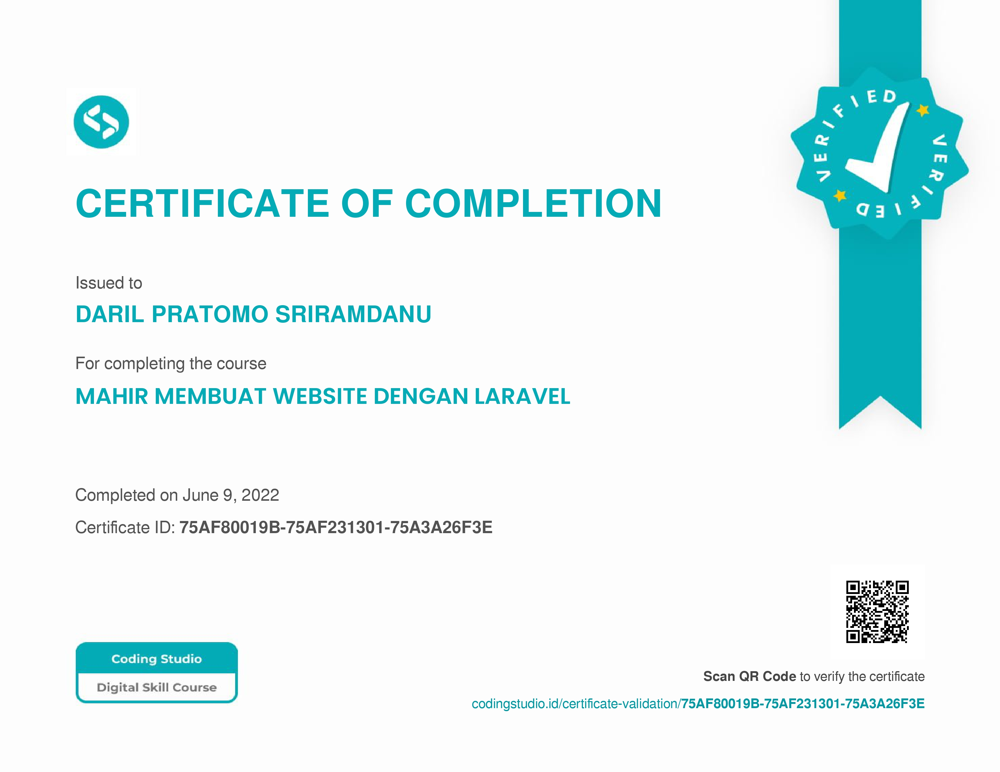

Hai! Saya Daril Pratomo Sriramdanu.
Seorang mahasiswa dari UPN Veteran Jakarta yang sedang mengikuti program Bangkit Academy 2023.
Saat ini saya sedang fokus belajar HTML, CSS, JavaScript, PHP, dan masih banyak lagi.
Saya bermimpi menjadi Full-Stack Developer di sebuah perusahaan besar.
Hi, Im Daril Pratomo Sriramdanu

My Certificate
